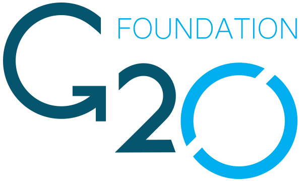

Conclusion:
The United states have the largest amount of expenditure on whichever kind of program and goes far more than other countries, especially on health area from 2012 to 2016.
Compared with GDP, these three aspects account for a small proportion in most of countries, except health expenditure in United States.
As for unit GPD and spending (based on the population of each country), American still stands out with both high unit GPD and unite governmental expenditure. And Australia and European countries including British, Germany, Italy and France show a good balance. And the rest countries have the similar characteristics, with low unit GDP and unit Spending.
According to the line charts, the fasted growing countries in both three governmental spending is China since 2012. On the contrary, America has cut off every expenditure since 2012.
Learning Summary:
Google API is friendly to beginners, which has easy code and beautiful plots. Also, the combination with google spread sheet is amazing, allowing users to make more complex pictures with excel.
However, Google API is not convenient for some complex dataset, such as map plot, which can only include 3 columns.